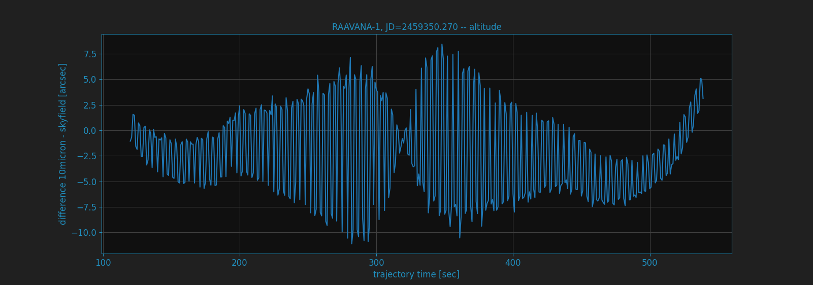

Architectural topics and math¶
Within these pages I would explain how and why I made the architecture decisions for linking it with the 10micron mount computer. This might help for setting up or just explain the behavior you experience when using MountWizzard4. I do this also as my development documentation. There might be some faults and error in it. If you find one, please let me know. I would like to get MountWizzard4 from it’s technical base as clean as possible.
Handling time¶
One basic definition is that MountWizzard4 will use at any time the clock of the mount computer. Therefore MountWizzard4 polls julian date, difference utc - ut1, time sidereal. This allows full sync for any calculation to be made. No time from computer to mount is necessary, but could be done at any time (except during model build run). The mount mostly use the julian date representation except for model build where a local sidereal time (LST) is used. In this case MountWizzard4 just stores the value and feed it back when the model is programmed. That’s the reason why you should not change time during model run.

One important difference between MountWizzard4 and Mount exists. As I use skyfield as on of the frameworks with it’s units for Angle, Coords, Time etc. I have to take the time definition of skyfield into account. Skyfield chooses TT (Terrestrial Time) as it’s basic concept, whereas the mount uses UTC (Coordinated Universal Time) as reference. TT is a modern astronomical time standard defined by the International Astronomical Union. TT is distinct from the time scale often used as a basis for civil purposes, UTC. TT is indirectly the basis of UTC, via International Atomic Time (TAI).
Precision of internal calculations¶
MountWizzard4 is using for all calculations the skyfield (https://rhodesmill.org/skyfield/) from Brandon Rhodes. As for the new command set offered with 10microns FW3.x it needs to calculate the alt/az coordinates for a satellite track each second for the entire track. As you would like to follow the as precise as possible I made some comparisons between the internal calculations done in 10micron mount and the results provided by skyfield.
In skyfield there is a chapter about satellite calculations and precision: https://rhodesmill.org/skyfield/earth-satellites.html#avoid-calling-the-observe-method Despite the fact that the observe method is expensive the difference in calculation time for a 900 step track is on my computer 120ms (using more precise observe method) to 7ms (using the less precise difference).
Brandon writes about it:
While satellite positions are only accurate to about a kilometer anyway, accounting for light travel time only affected the position in this case by less than an additional tenth of a kilometer. This difference is not meaningful when compared to the uncertainty that is inherent in satellite positions to begin with, so you should neglect it and simply subtract GCRS-centered vectors instead as detailed above.
Here the charts for NOAA 15 [B] at julian date JD=2459333.26498 for the transit happening. The used TLE data was:
NOAA 15 [B]
1 25338U 98030A 21104.44658620 .00000027 00000-0 29723-4 0 9990
2 25338 98.6888 133.5239 0011555 106.3612 253.8839 14.26021970192127
You could see the alt/az of the sat track.

the difference for altitude between 10micron and skyfield

the difference for azimuth between 10micron and skyfield
the difference for right ascension between 10micron and skyfield
the difference for declination between 10micron and skyfield

There is a set of plots for another satellite, which shows the same behavior. The used TLE data was:
RAAVANA-1
1 44329U 98067QE 21134.29933328 .00044698 00000-0 30736-3 0 9995
2 44329 51.6342 100.9674 0004554 122.3279 237.8162 15.74179130108776
You could see the alt/az of the sat track.

the difference for altitude between 10micron and skyfield
the difference for azimuth between 10micron and skyfield

the difference for right ascension between 10micron and skyfield

the difference for declination between 10micron and skyfield

For all calculations is valid:
they are using refraction correction with the same values.
the coordinates from 10micron are gathered with :TLEGEQJD#, :TLEGAZJD# commands
julian date is in UTC time system
10micron firmware 3.0.4
skyfield version 1.39